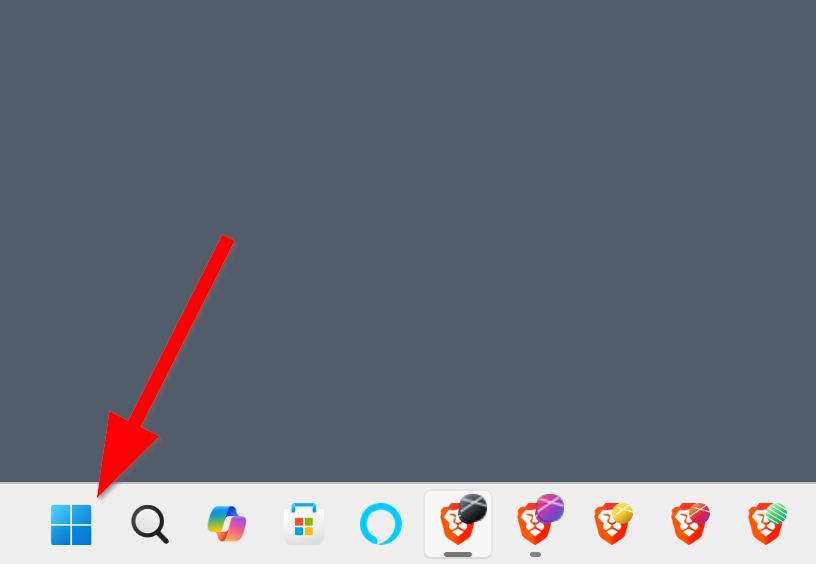
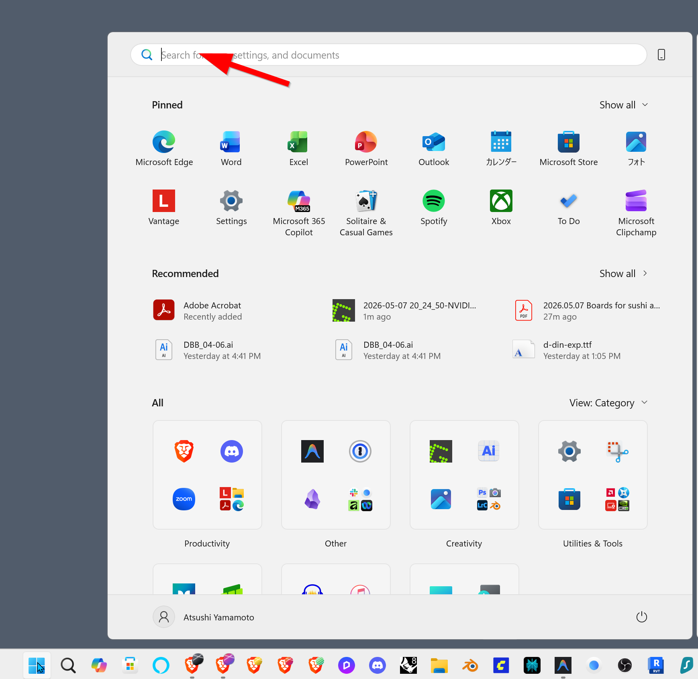
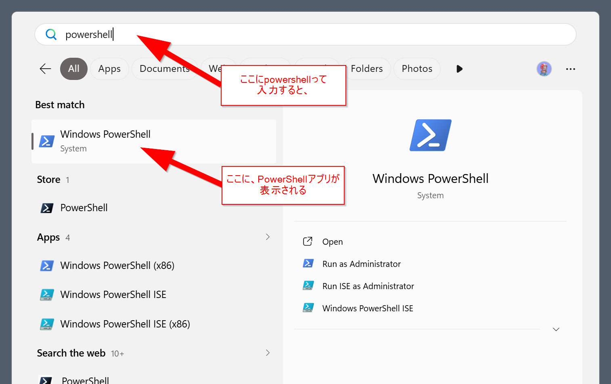
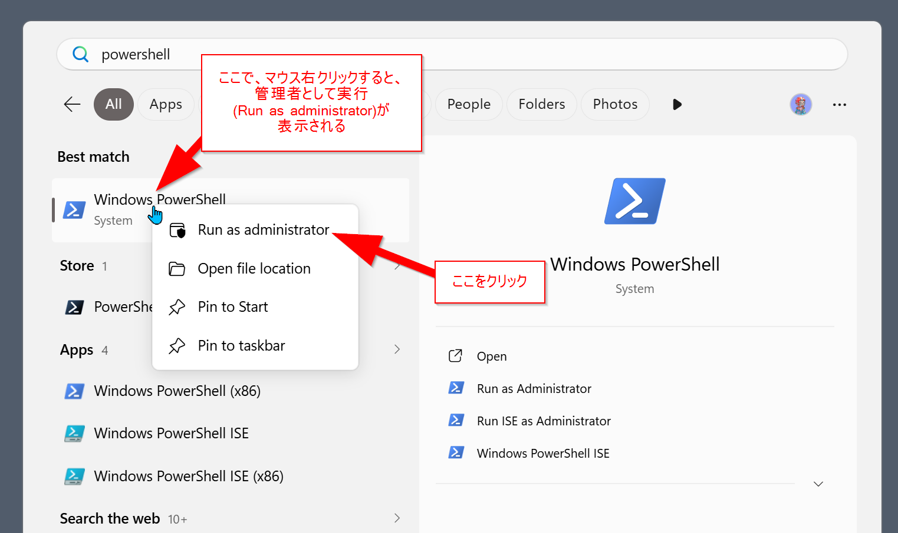

web3 概論 2026 · week03 · sushi yam
Claude Code インストールマニュアル
Windows 10 / 11 のパソコンに、AI と一緒に作業できる「書斎」を建てる手順書。
ターミナルを使ったことがない人でも進められます。
このマニュアルの読み方(2通り)
A. とにかくインストールだけ終わらせたい
各ステップの コマンド と ✅成功サイン だけを順に追えば完了します。
B. 一つずつ理解しながら進めたい
各所にある ▶ 例えで詳しく理解する をクリックすると、その操作が 何をしているのか を例え話で解説します。
▶ このマニュアル全体を貫く「例え」
Windows という 家 の中に、Linux という 書斎 を増築し、その書斎にある 作業机(ターミナル) で、専属の共同作業者(Claude Code) と一緒に原稿を書けるようにする ― これが、ここでやろうとしていることです。
書斎で書いた原稿は、いずれ 本棚(GitHub) に納められ、ショーケース(Vercel) に並べられます。今回はその最初の2歩 ― 書斎を建てて、共同作業者を迎えに行く ― です。
| 技術概念 | 例え |
|---|---|
| Windows | あなたの 家 |
| WSL2 | 家に増築する 書斎 |
| Ubuntu | 書斎の 内装 |
| ターミナル | 書斎の 作業机 |
| bash / zsh | 机での 作業ルール(方言) |
~/.bashrc | 朝、机に座る前に開く 備忘録 |
| Antigravity | AI助手つきの 執筆机ツール |
| Claude Code | 専属の 共同作業者 |
| agent-logs | 研究ノート |
curl ... | bash | 遠方の師匠が直送する道具一式を、その場で組み立てる |
sudo | 家の管理者の 印鑑 |
| GitHub | 本棚 |
| Vercel | ショーケース |
1全体の流れ
Windows
├── Antigravity(IDE — Ubuntu のターミナルを開く窓口)
└── WSL2(Linux 環境)
└── Ubuntu(Linux の一種)
├── Claude Code(本体)
└── agent-logs(ログ共有ツール)完了までの所要時間: 30〜60分(ダウンロード時間込み)
▶ 例えで詳しく理解する
Claude Code は Linux / macOS 用に作られているので、Windows ではそのままでは動きません。Windows は和室の家、Claude は洋室で生まれた住人。直接は同居できないので、家の中に「Linux 仕様の書斎」を増築 して、そこに住んでもらう、というイメージです。
その「書斎」を作る仕組みが WSL(Windows Subsystem for Linux) です。書斎の内装には Linux の中でも一番ポピュラーな Ubuntu を使います。
書斎の中で作業するときの「机」として、ここでは Antigravity(Google の AI エージェント型 IDE)を窓口に使います。
▶ WSL2 と Ubuntu はどう違うのか
「WSL2 と Ubuntu、両方インストールされるけど、これ何が違うの?」とよく聞かれます。書斎の例えで言うと:
- WSL2 = 書斎の 「箱(構造体)」そのもの。Windows という家の中に増築された、Linux 仕様の独立した部屋。壁・床・天井・配線・水道といった「Linux が動くための器」。Microsoft がつくった。それ単体では中に何もない、ただの空間。
- Ubuntu = その書斎に入れる 「内装」。床材、壁紙、家具、本棚 ― つまり中に住む人(あなた)が実際に触る部分。ターミナルの見た目、
aptというソフト管理の仕組み、ディレクトリ構造のクセ、付属ツールたち。Canonical という会社がつくった。
Ubuntu 以外にも内装はあります:Debian、Fedora、Arch …(=和風内装、北欧風、無印風 など)。
wsl --install は、書斎を増築する工事(WSL2) と、標準の内装パック(Ubuntu) が同時に届くセット商品、というイメージです。だから1コマンドで両方入る。
| WSL2 | Ubuntu | |
|---|---|---|
| 役割 | 箱(構造体) | 内装 |
| つくった人 | Microsoft | Canonical |
| 触る場所 | あまり意識しない | ターミナルで毎日触る |
| 替えられる? | 替えない(固定) | 替えられる(wsl --install -d Debian で畳張り替え) |
| 更新の仕方 | Windows 経由(構造改修) | apt upgrade(内装リフォーム) |
つまり、これから毎日触るのは 内装(Ubuntu) のほう。箱(WSL2) は静かに下で家を支えている、と覚えておけば大丈夫です。
2必要なもの・前提条件
| 項目 | 必要条件 |
|---|---|
| OS | Windows 10(バージョン2004 以降)または Windows 11 |
| メモリ | 4GB 以上(8GB 以上を推奨) |
| ディスク空き容量 | 10GB 以上 |
| インターネット | 安定した接続 |
| Claude アカウント | Claude Pro / Max / Team / Enterprise のいずれか(無料プランでは不可) |
| Google アカウント | Antigravity を使う場合に必要(個人の Gmail 可) |
| 管理者権限 | あり(WSL インストール時に必要) |
▶ 例えで詳しく理解する
Claude Pro($20/月) は、専属の共同作業者を雇うための 月謝 のようなものです。学生にとって決して軽い額ではありませんが、これがないと共同作業者は来てくれません。
Antigravity を使うには Google AI Pro / Ultra のサブスクリプションが必要です(個人の Gmail で利用可)。プログラム参加者は事前にプログラム提供者に確認してください。
3ステップ1:WSL(Ubuntu)をインストールする
3-1. PowerShell を「管理者として」開く
- Windowsキー を押す(または画面下のタスクバーの Windows ボタンをクリック)

① タスクバーの Windows ボタン - スタートメニューが開いたら、上の検索ボックスにフォーカスする

② 検索ボックスに入力する場所 powershellと入力すると、検索結果に Windows PowerShell が表示される
③ powershellと入力すると Windows PowerShell が出る- 「Windows PowerShell」を 右クリック → 「Run as administrator(管理者として実行)」

④ 右クリック → Run as administrator - 「変更を加えることを許可しますか?」→ 「はい」
PS C:\WINDOWS\system32> と表示されたウィンドウが開く。3-2. WSL をインストールする
wsl --install完了まで 5〜10分。
3-3. パソコンを再起動する
「再起動してください」と表示されたら 必ず再起動 してください。再起動しないと WSL は使えません。
3-4. 再起動後に出てくる Ubuntu ウィンドウについて
再起動が終わると、初回だけ Ubuntu のウィンドウが自動で立ち上がり、以下の表示が出ます:
Installing, this may take a few minutes...これは Ubuntu 内装の初期セットアップです。そのまま数分待ち、表示が落ち着いたらこのウィンドウは閉じてOK です(ユーザー名やパスワードを聞かれても、ここでは答えなくて構いません ― あとで Antigravity 経由のターミナルから設定します)。
wsl --install で「仮想化が無効」というエラーが出たら、ステップ11 を参照。3-5. 次にやること ― Antigravity を入れて、ターミナルを開く
書斎は建ちましたが、まだ 机(Antigravity) がありません。次のステップで:
- Antigravity をインストール する(Ubuntu のターミナルを開く窓口になる)
- Antigravity から WSL Ubuntu に接続 する
- ターミナルを表示 する
▶ 例えで詳しく理解する
このステップでやること:家の中に 書斎(WSL) を増築し、内装(Ubuntu)を整える。
PowerShell は、Windows に標準で付いている管理用の作業窓です。普段は使いませんが、書斎を増築するときだけ「管理者の印鑑つき」で開く必要があります。
wsl --install というコマンド一発で、WSL2 本体(増築工事の枠組み)と Ubuntu(書斎の標準内装)の両方が一度にインストールされます。
再起動は必須:再起動しないと WSL は使えません(増築工事は終わったが、ブレーカーが上がっていない状態)。
4ステップ2:Ubuntu のターミナルを開く
① Antigravity をインストール(机を運び込む)→ ② Antigravity を起動して WSL に接続(机を書斎モードに切り替える)→ ③ ターミナルを開く(机の上にメモ帳を出す)
4-1. ターミナルとは?
コマンド(命令文)を打ち込んで OS を操作する 黒い画面 のことです。
taro@DESKTOP-ABC123:~$ ▮taro@DESKTOP-ABC123:~$ の部分を プロンプト と呼び、ここにコマンドを入力 → Enter で実行されます。このマニュアルで「Ubuntu のターミナル」「WSL のターミナル」と書いてある場所はすべて、この画面のことを指しています。
▶ 例えで詳しく理解する
普段の Windows はマウスでアイコンをクリックして操作しますが、Linux(Ubuntu)では キーボードで命令を打ち込んで 操作します。
プロンプトは、書斎の机の上に置かれた「ご注文をどうぞ」のメモ帳。あなたが書き込んだ一行を、書斎の住人(Linux)が読み上げて実行してくれます。
4-2. なぜ Antigravity を使うのか
このマニュアルでは Antigravity から Ubuntu のターミナルを開きます。
▶ 例えで詳しく理解する
Antigravity は Google の AI エージェント型 IDE で、Ubuntu のターミナルとコードエディタを 1つの画面で同時に使える ので、Claude Code と相性がいいです。書斎の机の上に「原稿用紙(エディタ)」と「メモ帳(ターミナル)」を並べて置いてくれる、AI助手つきの作業ツール、というイメージです。
4-3. Antigravity をインストール
(1) ダウンロード
ブラウザで https://antigravity.google/download を開き、「Download for Windows (x64)」をクリック(ARM 搭載の Surface などなら ARM64 版)。
(2) インストール
- ダウンロードした
.exeをダブルクリック - 「次へ」「同意する」「インストール」
- 完了まで 1〜3分
(3) Google アカウントでサインイン
- 自動で起動(しなければスタートメニューから「Antigravity」を検索)
- 「Sign in with Google」をクリック
- ブラウザで Google アカウントにログイン → 「許可」
4-4. Antigravity から WSL Ubuntu に接続する
(1) コマンドパレットを開く
Ctrl + Shift + P画面上部に細長い検索窓が出る。
(2) WSL に接続
検索窓に入力:
Remote-WSL: Connect to WSL候補をクリック(または Enter)。
(3) 新しいウィンドウが開く
数秒〜十数秒待つと、新しいウィンドウが開きます。
>< WSL: Ubuntu が表示される。出ていなければ (1) からやり直し。古いウィンドウは閉じてOK。▶ 例えで詳しく理解する
コマンドパレット は、Antigravity の機能を文字で検索して呼び出せる便利な機能です。
Antigravity は通常、家(Windows)の机に座っています。ここで「書斎モード」に切り替えると、机ごと書斎(WSL)に引っ越す感覚です。>< WSL: Ubuntu の表示は、「いま書斎の中にいますよ」という札のようなものです。
4-5. ターミナルを開く
ショートカット
Ctrl + ` (バッククォート)バッククォートはキーボード左上、Esc の下、1 の左にあります(日本語キーボードでは Shift + @ で打てる場合あり)。
メニューから開く場合
View(表示) → Terminal(ターミナル)動作確認
taro@DESKTOP-ABC123:~$ ▮ が表示される。試しに以下を打ってみてください:
whoami→ 自分のユーザー名(例:taro)が表示されればOK。
pwd→ 現在いるフォルダ(例:/home/taro)が表示されます。
これで ステップ3以降のすべての作業はこのターミナルで行います。
5ステップ3:Ubuntu の初期設定
5-1. ユーザー名とパスワードを決める
Enter new UNIX username:→ 半角英小文字 でユーザー名(例:taro)。大文字・記号・スペースは不可。
New password:
Retype new password:→ パスワードを2回入力。入力中は何も表示されませんが、ちゃんと打てています。
5-2. パッケージを最新にする
プロンプト(taro@DESKTOP-XXX:~$)が出たら、以下を 1行ずつ 実行します:
sudo apt updatesudo apt upgrade -y linux-generic最初の sudo 実行時に パスワードを聞かれます(さっき設定したもの)。これも入力中は表示されません。完了まで 2〜5分。
▶ 例えで詳しく理解する
このステップでやること:書斎の住人としての 自分の名前と鍵 を登録し、内装を最新に整える。
このパスワードは、家の管理者の 印鑑(sudo) の暗証番号です。書斎の重要な工事(管理者権限が必要なコマンド)をするときに、毎回これで本人確認します。
2つのコマンドの意味:
sudo… 管理者権限で実行する命令(=印鑑を押す)apt update… インストール可能なソフトのリストを更新(=書店の最新カタログを取り寄せる)apt upgrade -y linux-generic…linux-generic(Ubuntu の中核パッケージ)を最新版にアップグレード(-yは「全部はい」)
6ステップ4:Claude Code をインストールする
6-1. インストールコマンド
curl -fsSL https://claude.ai/install.sh | bash6-2. ターミナルを開き直す
ターミナルを一度閉じて開き直す。または:
source ~/.bashrc6-3. インストール確認
claude --version2.1.126)が表示される。claude コマンド本体は実行しません。 agent-logs(次のステップ)を入れる前に claude を起動すると、agent-logs のラッパー(同意確認の仕組み)を通らずに Claude が起動してしまうためです。Anthropic アカウントへのログインは、ステップ8で agent-logs が立ち上がった後に自動で促されます。7ステップ5:agent-logs をインストールする
ここからは Chiba Tech / Henkaku Center のリサーチプログラム参加者向け。プログラム参加者でない人は飛ばしてOK。
7-1. インストールコマンド
curl -fsSL https://agent-logs.chibatech.dev/install.sh | bash→ Detected platform: linux-x64
→ Fetching latest release...
→ Downloading agent-logs v0.3.6 for linux-x64...
✓ Checksum verified
✓ Installed to /home/taro/.local/bin/agent-logs
✓ Wrapper installed in /home/taro/.bashrc
✓ Installation complete. Open a new terminal, then run:
claude
Or reload your current shell:
source /home/taro/.bashrc→ 出力末尾の source ... を、次のステップで実行します。
.bashrc か .zshrc か、出力をよく見てくださいシェル(後述)の種類によって、最後の行は変わります:
- bash の人(WSL Ubuntu のデフォルト):
source /home/あなた/.bashrc - zsh の人(macOS デフォルト、または zsh に切り替えた人):
source /home/あなた/.zshrc
▶ bash と zsh ってなに?(例えで理解する)
ターミナルに打ったコマンドを解釈して OS に伝えるプログラムを シェル と呼びます。「ターミナル(画面)」と「シェル(中身)」は別物です。
例えで言うと:
- ターミナル = 書斎の 机そのもの(物理的な作業場所)
- シェル = その机での 作業ルール / 方言(同じ机でも、人によって作法が違う)
bash と zsh は、いわば 方言違いの2人の助手 です。やってくれることは大体同じですが、話し方(コマンドの細かい挙動)とノートの置き場所が少し違います。
| bash | zsh | |
|---|---|---|
| 正式名 | Bourne Again SHell | Z Shell |
| WSL Ubuntu のデフォルト | ✅ | |
| macOS のデフォルト(2019年以降) | ✅ | |
| 設定ファイル(備忘録) | ~/.bashrc | ~/.zshrc |
| 性格 | 標準的・素朴・互換性が高い | 補完が強力・テーマ豊富・少しモダン |
それぞれが 自分専用の備忘録 を持っています:bash は ~/.bashrc、zsh は ~/.zshrc。これは「毎朝、机に座る前に開く申し送りメモ」のようなもので、「今日から claude という新人さんも仲間ね」「agent-logs の道具はこの引き出しにあるよ」といった情報が書かれています。
agent-logs のインストーラーは、あなたが今 どちらの助手と一緒に働いているか を自動で判別して、適切な備忘録(.bashrc か .zshrc)に追記してくれます。だから出力の最後に表示される source ... も、その助手のものになる ― という仕組みです。
source の意味は、「今すぐ備忘録を読み直して!」という指示。.bashrc(または .zshrc)を編集しただけでは、いま開いているターミナルには反映されません。source で即座に読み直してもらいます。
7-2. シェル設定を反映
7-1 のインストール出力の 最後の行に表示されたコマンド を、そのままコピペして実行します。
# bash の人(WSL Ubuntu のデフォルト)
source ~/.bashrc# zsh の人(macOS や zsh に切り替えた人)
source ~/.zshrc▶ 例えで詳しく理解する
このステップでやること:書斎の机に 研究ノート(agent-logs) を備え付ける。Claude との対話の記録が、研究プログラムに自動で共有されるようになる。
このスクリプトは以下を行います(配布元 github.com/henkaku-center/agent-logs):
- agent-logs CLI 本体 をインストール
- Claude Code に フック(セッション終了時に自動でログ送信する仕組み)を登録
claudeコマンドを 同意確認ラッパーで包む- シェルの設定ファイル(
~/.bashrc)に必要な設定を追記
研究ノートは、机の引き出しに常駐して、あなたと Claude の対話を記録します。ノートを「持つかどうか」「どのフォルダのログを共有するか」は、あなたが選べます(ステップ8で確認されます)。
＋補足:Ubuntu に git を入れる(claude 起動前のひと手間)
Antigravity で AI と一緒にプログラムを作ったとき、すでに git を使った経験があるかもしれません。でも、その git は Ubuntu(WSL)からは使えません。Ubuntu 内に改めて git を入れる必要があります。
Windows 側の git と、Ubuntu 側の git は別物
| Windows 側 | Ubuntu(WSL)側 | |
|---|---|---|
| 場所 | C:\Program Files\Git\ など | /usr/bin/git |
| 入った経緯 | Antigravity / Git for Windows などと一緒に | あなたが apt install で入れる |
| 設定(ユーザー名・メール) | Windows 側で設定済み | Ubuntu 側で改めて設定が必要 |
| GitHub 認証情報 | Windows 側に保存 | Ubuntu 側で改めて認証が必要 |
▶ 📖 例えで詳しく理解する
- 家(Windows) には大工道具一式(Git for Windows)が置いてある
- 書斎(Ubuntu) は別の部屋で、別の道具棚がある
- 書斎で作業するには、書斎用の道具を別途運び込む 必要がある
- 共同作業者の Claude は 「道具を使う人」 であって 「道具を仕入れる人」 ではない
家の道具を書斎に持ち込むことはできません。同じ「git」という名前でも、書斎には書斎の git を別途用意します。
claude 起動の前に入れておく
Ubuntu のターミナルで:
sudo apt install git -y数秒で終わります。続けてバージョン確認:
git --versiongit version 2.x.x のように表示される。Ubuntu 側で git の初期設定
git にあなたが誰かを教えます(コミットの著者として記録される情報)。
git config --global user.name "あなたの名前"
git config --global user.email "あなた@example.com"💡 Claude(共同作業者)を呼ぶ前に、机に git を備え付けて名札を貼っておく ― そういうイメージです。これをやっておくと、Claude を起動した瞬間から git を使った作業に入れます。
▶ 📖 「Claude が自動で入れてくれないの?」
Claude Code はシェルコマンドを実行できるので、起動後に「git 入れて」と頼めば、sudo apt install git -y を実行しようとします。ただし:
- Claude は 勝手にコマンドを走らせない ― 毎回「これ実行していい?」と確認してくる
sudoのパスワードは Ubuntu が直接あなたに聞いてくる(Claude じゃない)ので、結局あなたが入力する必要がある
つまり「コマンドを打つ手間」だけは省けるけど、確認とパスワード入力は残ります。起動前に自分で sudo apt install git -y を打っておく方が、結果的にスムーズです。
例えで言うと:
- 「この道具が要りますよ」と気づく ✅(Claude にできる)
- 「取りに行ってもいいですか?」と聞く ✅(Claude にできる)
- 管理人(sudo)の印鑑を出す ❌(あなたの仕事)
- 勝手に管理人室に侵入して道具を持ち出す ❌(できないし、しない)
▶ 📖 GitHub 認証も Ubuntu 側で別に必要
Windows の Antigravity 側で GitHub 認証していても、Ubuntu 側では未認証 です。Ubuntu で git push するときに、改めて認証が必要になります。家の鍵と書斎の鍵は別 ― そういう関係です。
一番ラクな方法は GitHub CLI(gh) を使うこと:
sudo apt install gh -y
gh auth loginブラウザが開いて、画面の指示通り進めれば認証完了。以降 git push でパスワードを聞かれることはなくなります。
8ステップ6:claude を起動する
ここで初めて claude コマンドを実行します。実行すると、以下が順番に発生します:
claude を実行
↓
agent-logs ラッパーが起動
① メール認証(6桁コード)
② 同意フォーム署名のチェック(初回のみ、ブラウザで署名)
③ このフォルダのログを共有するかどうかの確認
↓
本物の Claude Code が起動
④ Anthropic アカウントの OAuth ログイン(初回のみ、ブラウザが開く)
↓
Claude が使えるようになる▶ 例えで詳しく理解する
このステップでやること:共同作業者(Claude)に「初出勤」してもらう。研究ノートが受付係として、本人確認・同意書確認・このフォルダの共有可否確認をしてから、Claude を呼び込みます。
8-1. プロジェクトフォルダに移動
mkdir -p ~/projects/my-first-project
cd ~/projects/my-first-project8-2. claude を起動
claude8-3. ① メール認証(agent-logs)
初回:メールアドレスを登録する
最初に メールアドレスを聞かれます。Claude アカウントに登録しているメールアドレスを入力してください。
────────────────────────────────────────────────────
Agent Logging Authentication
Enter your email address: ▮入力 → Enter すると、そのメールに 6桁の確認コード が送られます。
2回目以降:登録済みのメールにコードが届く
メールが既に登録されている場合は、いきなりこの画面が出ます:
────────────────────────────────────────────────────
Agent Logging Authentication
Verification code sent to あなた@example.com
Enter the 6-digit code from your email: ▮- メールを開いて 6桁のコード を確認
- ターミナルに入力 → Enter
💡 メールアドレスは事前に設定するものではなく、初回 claude 実行時にその場で対話的に聞かれて入力する 仕組みです。認証情報は ~/.config/agent-logs/token.json に保存され、90日で失効します(失効したらまたメール認証から)。
8-4. ② 同意フォームに署名(初回のみ)
メール認証に成功すると、まだ同意フォームに署名していなければ次のメッセージが出ます:
────────────────────────────────────────────────────
Agent Logs — Consent Required
You must sign the informed consent form before using Claude.
Visit the portal to read and sign:
https://agent-logs.chibatech.dev/portal.html
Logged in as tanaka@chibatech.ac.jp💡 末尾の Logged in as ... には、8-3 で入力したあなたのメールアドレスが表示されます。このメールでポータルにログインして署名する必要があります(別のメールでログインしても紐付きません)。
署名の手順
- ブラウザで agent-logs.chibatech.dev/portal.html を開く
- ターミナルに表示された 同じメールアドレス でポータルにログイン
- インフォームド・コンセント(研究同意書) を読んで署名
- ターミナルに戻って もう一度
claudeを実行(または案内に従って続行)
- 教育評価のため(必須):授業や課題のために使われる
- 研究のため(任意):オン/オフを選べる ― 研究プログラムでの分析にも使われるかどうか
▶ 📖 なぜ署名が必要なのか
agent-logs はあなたと Claude の対話を 研究プログラムに共有 する仕組みです。共有が始まる前に、「何が共有されて、どう使われるか」をあなた自身が理解して同意した、という記録を残す必要があります。これが インフォームド・コンセント(informed consent / 説明と同意) です。
書斎の例えで言うと:研究ノート(agent-logs) に対して「このノートに作業内容を書き留めて、研究室に提出することに同意します」というサインを最初に1回だけする ― そういうイメージです。署名は1回で済み、以降は毎回聞かれません。
8-5. ③ このフォルダの共有可否を選ぶ
Share session logs for this workspace?
/home/taro/projects/my-first-project
❯ 1. Yes, share this folder
2. No, don't share- 矢印キー(↑↓) で選択
- Enter で決定
Yes と No の違い
| 選択 | このフォルダで Claude を使うと… | 向いてる場面 |
|---|---|---|
| 1. Yes, share this folder | このフォルダの 対話ログ(あなたのプロンプト + Claude の返答) が、研究プログラムに自動で共有される | 課題用フォルダ、研究プログラムに参加するフォルダ |
| 2. No, don't share | 共有されない。Claude は普通に使えるが、ログは送られない | 個人的なプロジェクト、機密を扱うフォルダ |
💡 この選択は フォルダ毎に1回だけ 聞かれて、以降は記憶されます。「課題フォルダは Yes、個人プロジェクトは No」のようにフォルダ単位で使い分けられます。
共有される/されないもの(Yes を選んだ場合)
| 共有される | 共有されない |
|---|---|
| あなたのプロンプト | ファイルの中身(tool_result の中身は除去) |
| Claude の返答 | ファイル全体のスナップショット |
| ツール呼び出しの「名前」 | 添付ファイル |
ファイルの 中身は送られない のがポイント。送られるのはあくまで「あなたと Claude の会話そのもの」だけです。
どっちを選べばいい?
- web3 概論の課題で使うフォルダ →
Yesを推奨
Chiba Tech / Henkaku Center のリサーチプログラム参加者として、研究ノートに記録を残す ― これがそもそもの参加目的です。共有されるのは会話部分だけで、ファイルの中身は送られないので、安心してYesでOK。 - 後で個人プロジェクトを作るとき → そのときに
Noを選べばよい
この選択はフォルダ毎なので、課題フォルダは Yes のまま、新しい個人フォルダでclaudeを起動したときに改めてNoを選べます。
8-6. ④ Anthropic アカウントでログイン(Claude Code 初回のみ)
agent-logs のチェックを通過すると、ブラウザで Anthropic のログイン画面が開きます。
- Claude Pro / Max などのアカウントでログイン
- 「許可」を押してターミナルに戻る
Login successfulが表示されれば完了
8-7. Claude を使い始める
Claude のプロンプト(>)が出たら:
> hello2回目以降の claude 実行では、メール認証も OAuth も省略され、共有可否も新しいフォルダのときだけ聞かれます。普通に claude を打つだけで起動します。
▶ 8-1 のフォルダを作る理由
プロジェクトフォルダ毎に「共有する/しない」を選ぶ設計なので、まず作業フォルダに入った状態で claude を実行する必要があります。書斎の中に、最初の 作業用ファイルキャビネット を1つ作って、その前に椅子を移動させた状態です。
mkdir -p… フォルダを作る(-pは親フォルダも含めて作る)cd… そのフォルダに移動
9補足:bash と zsh について
▶ シェルとは何か / bash と zsh の違い / ~/.bashrc とは
シェルとは?
ターミナルに打ったコマンドを解釈して OS に伝えるプログラムを シェル と呼びます。「ターミナル(画面)」と「シェル(中身)」は別物です。ターミナルは 机そのもの、シェルは 机での作業ルール(方言) です。
bash と zsh の違い
| bash | zsh | |
|---|---|---|
| 正式名 | Bourne Again SHell | Z Shell |
| WSL Ubuntu のデフォルト | ✅ | |
| macOS のデフォルト(2019年以降) | ✅ | |
| 設定ファイル | ~/.bashrc | ~/.zshrc |
| 機能 | 標準的・互換性高 | 補完が強力・テーマ豊富 |
Windows + WSL を使うあなたのデフォルトは bash です。よって、設定ファイルは ~/.bashrc を使います。
~/.bashrc とは
~ は ホームディレクトリ(あなた専用フォルダ、例:/home/taro)。.bashrc はその中にある「ターミナルを開くたびに自動で読み込まれる設定ファイル」です。毎朝、机に座る前に開く 備忘録 のようなもの。
source ~/.bashrc の意味
.bashrc の内容を 今開いているターミナルに即座に反映 させるコマンドです。.bashrc を編集しただけでは現在のターミナルには反映されません。source で「今すぐ読み直して!」と指示します。別名で . ~/.bashrc(ドット + スペース)とも書けます。
10補足:curl ... | bash は何をしているのか
このマニュアルでは2回出てきました:
curl -fsSL https://claude.ai/install.sh | bash
curl -fsSL https://agent-logs.chibatech.dev/install.sh | bash▶ 各オプションの意味 / 動作の流れ / 安全性
各オプションの意味
| 部分 | 意味 |
|---|---|
curl | URL からファイルをダウンロード |
-f | サーバーがエラーを返したら失敗扱い |
-s | 進捗バーを非表示(silent) |
-S | エラーは表示する |
-L | リダイレクトを追跡 |
| | パイプ。左の出力を右の入力に渡す |
bash | シェルスクリプトを実行 |
全体の動き
curlがインストールスクリプト(install.sh)をダウンロード- その内容を 保存せず にそのまま
bashに渡す bashが受け取った内容を実行する
つまり「ダウンロードして即実行」のワンライナーです。遠方の師匠から、必要な道具(ソフト)が箱で届く → 開封せずに中身をそのまま、書斎の組み立て係(bash)に渡す → その場で開けて組み立ててくれる、という流れ。
安全性について
このパターンは便利ですが、スクリプトの中身を読まずに実行している ので、配布元が信頼できない場合は危険です。実行前に確認したい場合:
# 一旦保存して中身を読む
curl -fsSL https://agent-logs.chibatech.dev/install.sh -o install.sh
less install.sh # 中身を見る(qで終了)
bash install.sh # 確認したら実行agent-logs と Claude Code はどちらも 公式配布元 で、ソースコードも GitHub で公開されているので、そのまま実行しても安全です。
11よくあるトラブルと対処
▶ wsl --install で「仮想化が無効」と言われる
PCの BIOS/UEFI で 仮想化(Intel VT-x / AMD-V) が無効になっています。PCメーカーごとの手順で BIOS に入り、Virtualization Technology を Enabled にしてください。書斎を増築したいのに、家の基礎工事の許可が下りていない状態。
▶ claude: command not found
ターミナルを一度閉じて開き直すか、source ~/.bashrc を実行してください。それでもダメな場合はインストールが失敗しています。もう一度ステップ6-1を実行。備忘録(.bashrc)に新人(claude)の存在がまだ書き込まれていない状態。
▶ agent-logs: command not found
同上。ターミナルを開き直すか、source ~/.bashrc を試してください。
▶ Antigravity でターミナルを開いても WSL になっていない
画面の左下を確認。>< WSL: Ubuntu が表示されていない場合、WSL に接続できていません。Ctrl + Shift + P → Remote-WSL: Connect to WSL をやり直してください。
ターミナルのプロンプトが PS C:\... になっている場合は、PowerShell が開いてしまっています。ターミナルパネル右上の 「+」の隣の下向き矢印 ▼ → bash または Ubuntu を選んでください。書斎(WSL)ではなく、家のリビング(PowerShell)で作業を始めてしまった状態。
▶ Antigravity が WSL に接続できない/重い
PowerShell(管理者)で WSL を再起動:
wsl --shutdownその後 Antigravity を再起動して、もう一度 Remote-WSL: Connect to WSL を試してください。
▶ Claude 起動時に同意フォーム署名を求められる
ブラウザで agent-logs.chibatech.dev/portal.html を開き、署名を完了してください。署名しないと claude は起動できません。
▶ Windows のファイルを編集したい
WSL からは /mnt/c/Users/あなたの名前/ で C ドライブにアクセスできます。ただし、WSL のホーム(~/projects/)に置く方が動作が高速 です。
cd /mnt/c/Users/あなたの名前/DocumentsWSL のホームは「書斎の中の机の上」、/mnt/c/... は「家のリビングまで取りに行く」距離。書斎の中で作業した方が速い。
12アンインストール方法
agent-logs を削除
agent-logs uninstall
source ~/.bashrcClaude Code を削除
claude uninstallまたは ~/.local/bin/claude を直接削除。
WSL ごと削除
wsl --unregister Ubuntu参考リンク
- agent-logs(Chiba Tech / Henkaku Center):agent-logs.chibatech.dev
- agent-logs ソースコード:github.com/henkaku-center/agent-logs
- Claude Code 公式ドキュメント:docs.claude.com
- 同意フォーム ポータル:agent-logs.chibatech.dev/portal.html
おわりに ― 書斎が建ったあとに
ここまでで、あなたは:
- 家(Windows)の中に 書斎(WSL + Ubuntu) を建てた
- 書斎の 作業机(ターミナル) に座れるようになった
- 専属の 共同作業者(Claude Code) を雇い入れた
- 研究ノート(agent-logs) を引き出しに備え付けた
これからの web3 概論の課題で、ここで建てた書斎を使って原稿(コード)を書いていきます。書いた原稿は、いずれ 本棚(GitHub) に整理して納め、世に出すべきものは ショーケース(Vercel) に並べる ― そこまで一本の動線でつながっています。
呪文を覚えるのではなく、家を建てる 感覚で。